Development of technologies has made it possible to introduce automation systems into almost all manufacturing fields and process industries.
Industrial automation is a set of technologies that uses control systems and devices that includes software and hardware, such as computer software and robotics to enable automatic (automated) operation and control of industrial processes and machinery. It generally encompasses: Information processing, measurement, manipulation or control of industrial processes according to an expected aim in machine equipment or production process, without direct manual intervention. That is, requiring minimal human intervention.
Industrial automation is a way to increase productivity without sacrificing the quality of the end product and safety of the production workers. It enhances production systems, product quality and also improves production safety. Safety is a key benefactor of any production line and the main goal of any industrial project is first to always keep employees and workers safe.
Industrial automation is made up of 3 major parts.
- Input Systems
- Output Systems
- Logic/ Control Systems
The input part can be the various sensors used, which helps in process detection. The outputs involves the various actuators that are used to manipulate and control the process. The logic controller can be seen as the brains of the entire process, which collects data from the various sensors, and sends instructions to the actuators.
Systems that make up the automation process generally include:
- Sensors: these are devices that help covert physical conditions into electrical signals.
- Transmitters: these are devices that take measurements from sensors, and transform them into standard signals.
- Actuators: these are devices that convert electrical signals into a physical conditions.
- Controllers: these are devices that takes signals from sensors and transmitters and give commands to actuators
Industrial Automation Components
Industrial automation generally includes both hardware and software components. The software components includes:
- Supervisory Control and Data Acquisition (SCADA) systems
- Various PLCs and HMI software
For the hardware components, asides from the various sensors transmitters and actuators, other hardware components of industrial automation includes, but are not limited to:
- Programmable Logic Controller (PLC)
- Industrial Motor Controllers
- Distributed Control Systems (DCS)
- Variable Frequency Drives (VFD)
- Human Machine Interface (HMI)
- Robotics
-
SCADA (Supervisory Control and Data Acquisition)
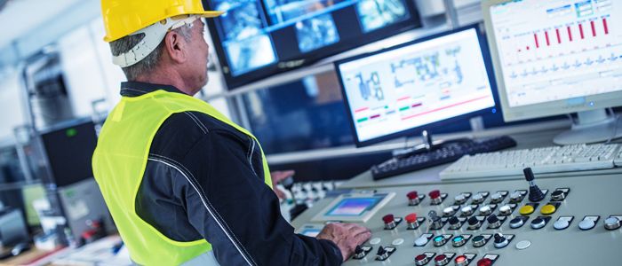
A SCADA System Monitoring Industrial Processes.
- Data Acquisition: a process of gathering field and production system data through real-time monitoring of these systems
- Data Communication: the use of wired networks to communicate between master terminals and remote devices out in the field.
- Information and Data Presentation: the display through HMIs, of needed information gathered from various field sensors and controllers.
- Monitoring and Control: the process of observing and manipulating the status of various processes. It is used to monitor and control equipment at remote locations.
- Electric power generation, transmission and distribution
- Water distribution and massive sewage handling systems
- Building automation
- Traffic light control systems
- Manufacturing and production plants
- Oil and gas refineries
-
PLCs (Programmable Logic Controllers)
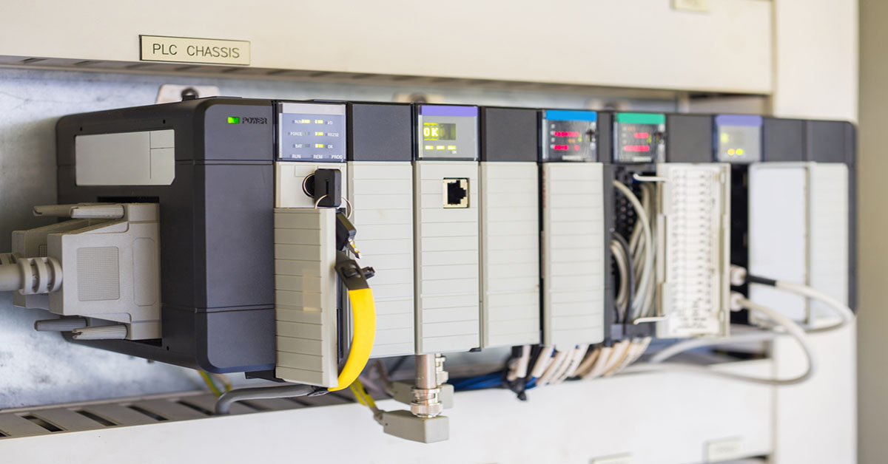
A Modular Programmable Logic Controller by Rock-well Automation.
- Power Supply Units: This is a device used to regulate a safe voltage for the CPU and the rest of the modules. It takes in a 110-220VAC voltage and provides a safe 24VDC voltage that can power the CPU and the modules, with varying current (2A, 5A, 10A) depending on the on the number of modules connected. Since there is no data communication between the power supply and the other PLC modules, there is no need for a bus connector unlike for the other modules which need a bus connector to communicate with the rest of the modules.
- CPU or Processor: This is the brains of the systems and is usually located at the second slot. With its primary functions being to evaluate the inputs, process the logic based on the user defined program, and update and energize the output based on these logic.
- Input and Output Modules: Depending on the signals we need to monitor and control within a given process, we need these Input and output modules to interact with the process. Input and output modules usually consists of Digital and Analog modules. The digital modules are used for devices that receive digital signal (usually on/off signals). While the analog modules are for devices that receive analog signals e.g. the standard 4-20mA analog signal.
- Function Modules: used for applications where signals and processes are needed to be of high accuracy. The function module (FM) is utilized because they are specialized modules that process signals independent of the CPU.
- Communication Processor Module: these modules are needed for additional communication capabilities. They provide additional communication ports.
- Remote I/O or Interface Modules: These are utilized when the number of I/O modules provided in a given racks aren’t sufficient for the process being controlled. The interface module (IM) also allows us to connect input and output modules at remote locations using the profibus communication protocol.
-
Industrial Motor Controllers
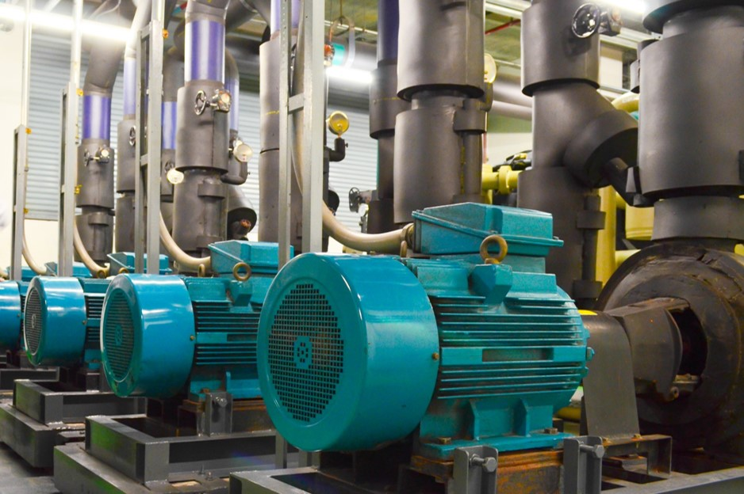
An Industrial Motor.
- A Contactor
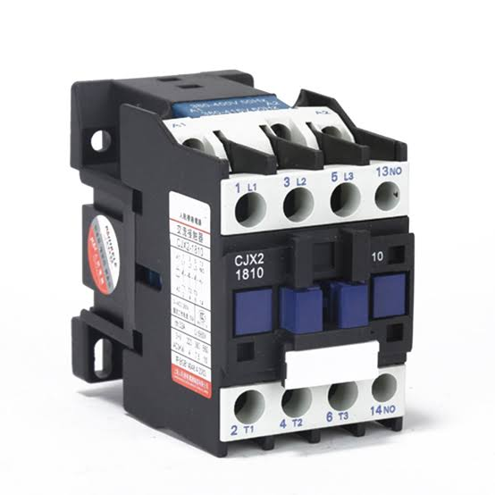 A Contactor.This an electromagnetic switch capable of making, carrying and breaking current. It consists of power contacts and control contacts use to feed power, and achieve some level of control respectively. Unlike normal relays, the contactors are able to withstand greater current levels. Depending on the work-load, the contactors have to go through some selection process.
- The Overload Relay:
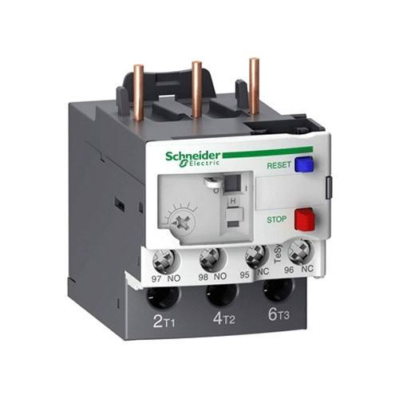 An Overload Relay.This is a protective device which protects the motor from mechanical overload current. When a pre-set current value is set, this device trips the current flow anytime that set value is about to be exceeded. Whenever there is a mechanical overload, the motor tends to draw more current in other to compensate and the overload relay is put in place to avoid this because it could damage the motor.
- Circuit Breakers:
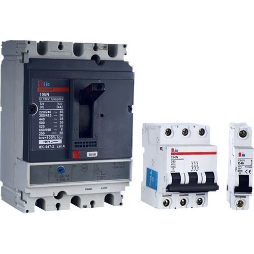 An MCCB & MCB Circuit Breaker.A circuit breaker is a protective device that protects electrical components from short-circuit or abnormal currents. Industrial circuit breakers could be MCBs (Miniature Circuit breakers) or MCCBs (Moulded case circuit breakers) with difference being that the MCB is used for lower current workloads usually less than 100Amps while the MCCB is used for higher current workloads.
- The Phase Failure Relay:
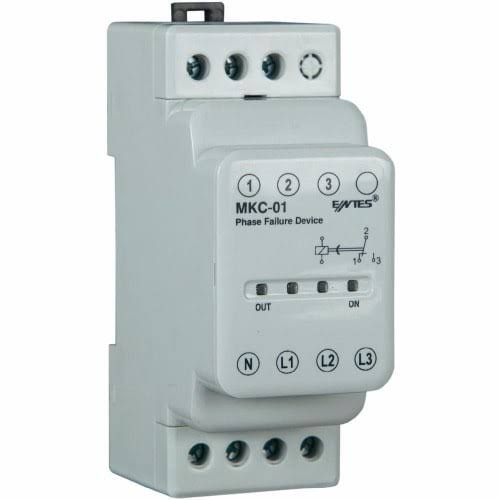 A Phase Failure Relay.This is a protective device that protects the motor against loss of a phase of electrical power. And prevents a condition called “single-phasing”, where the 3-phase motor is fed with power that is short of a phase, which could damage the motor.
- Motor Protection switch
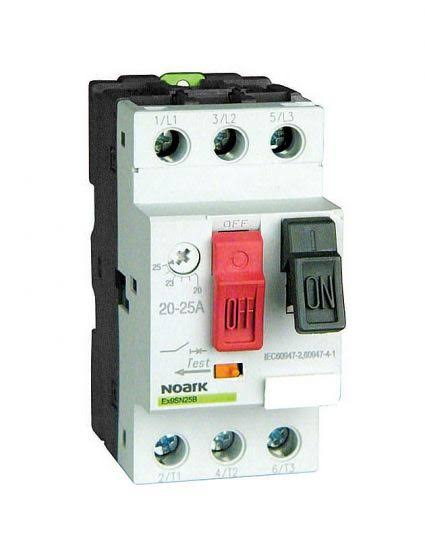 A Motor Protection Switch.Most of the protective devices: the overload protection, the circuit breaker and the contactor can all be fused into one device and that is what the motor starter is. An all-in-one protection device.
-
Variable Frequency Drives (VFD)
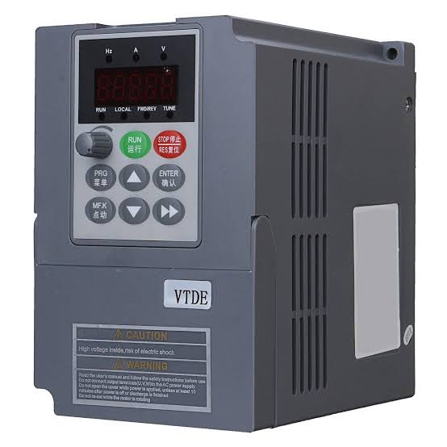
A Variable Frequency Drive.
-
Distributed Control Systems (DCS)
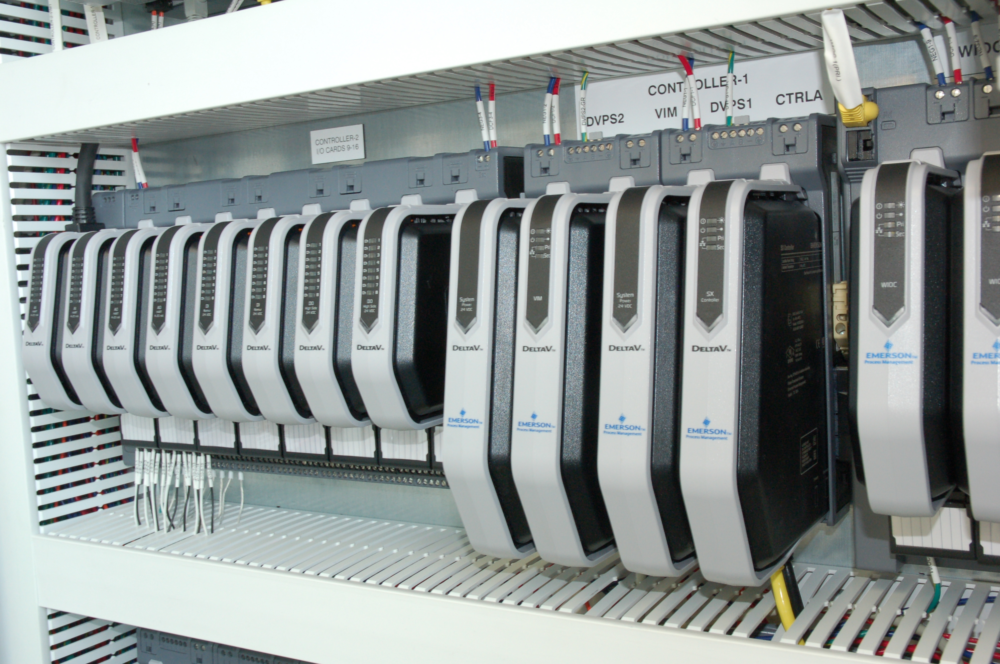
A DeltaV DCS
- Chemical and petro-chemical plants
- Power and nuclear plants
- Oil and gas refineries
-
Human Machine Interface (HMI)
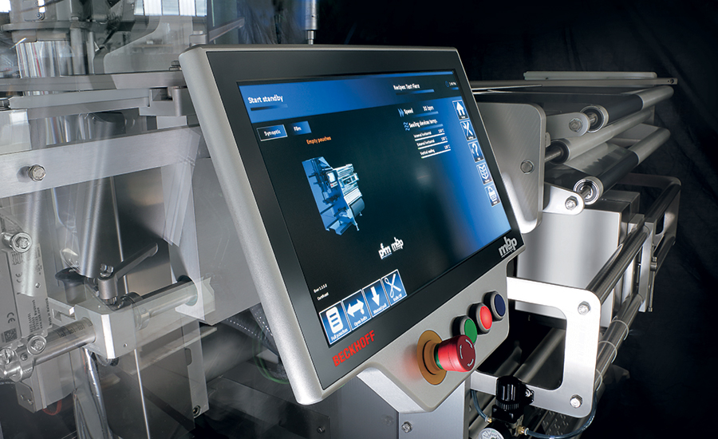
A Human Machine Interface Also Known as An Opertor Machine Interface (OMI)
-
Robotics
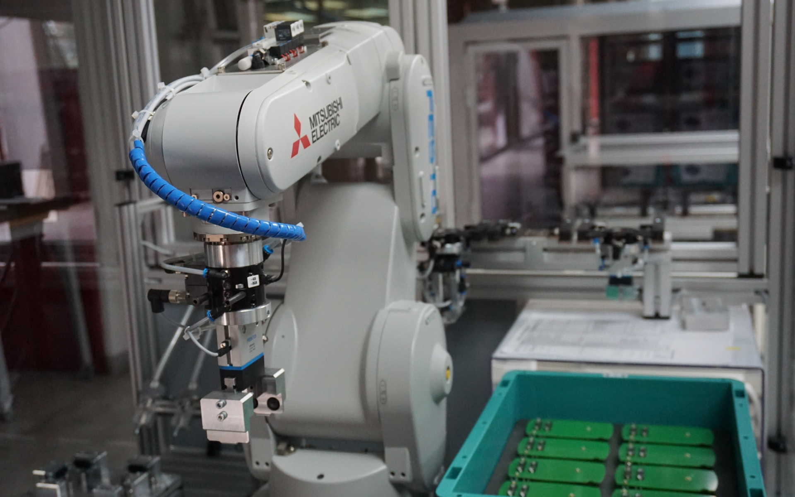
A Mitsubishi Industrial Robot
This is a type of control system architecture set up for various process control. SCADA systems control and monitor industrial processes. It is a central control system which consists of controller network interface, inputs and outputs, communication equipment and software. A supervisory control system gathers and acquires data from a process, and also sends data to the process, usually to perform some form of control on the process.
The system acquires and processes real time data, with direct interaction with devices such as sensors and controllers and records events into a log files for historical referencing. This data is often important for data analysis and it enables effective decision making for process optimization in industrial processes.
The functions of SCADA systems includes:
Applications of SCADA:
This is a rugged industrial computer, designed for the control of manufacturing processes. They can act as standalone units that continuously monitor and automate processes. They can also be networked to control an entire plant, and they consists of modular components mounted on a rack (a device that holds all the modules of a PLC in their respective slots) depending on the design of the PLC.
These components include:
The PLC could be of an integrated / compact design, with a single case and fixed numbers of I/Os or a modular design with extendible modular components planted into a bus or rack The PLC operates by continuously monitoring the inputs, and updating and controlling the outputs as a result of some set logic instructions or user defined program. The user defined Program can be any of the 5 major PLC programming languages as stated by the IEC 61131-3 standard. The programming languages are group into two major categories: Text based languages and Graphical languages.
The Text based languages are:
Instruction List (IL)
Structured Text (ST)
While the graphical based languages are:
Ladder Logic Diagram (LLD)
Function Block Diagram (FBD)
Sequential Function Chart (SFC)
Ladder Logic is by far the most popular programming language for the PLC, because it is closely related to familiar relay wiring system. Next to it, is the Function Block Diagram (FBD).
The movement of mechanical systems like conveyor belts and industrial fans, are achieved with industrial motors, so they are one of the crucial components of industrial automation. The industrial motor is an electro-mechanical device that converts electrical energy into mechanical energy. And it is used to move systems in the process and production plant. For industrial motors to operate efficiently, they need to be started and ran properly. Due to the high demand of current at start, the industrial motor usually requires a controlled start which limits its starting in-rush current.
The types of Industrial motors are:
I. NEMA A Motors: These motors of older standards, and require up 5 to 8 times the full load current at starting.
II. NEMA B Motors: these are motors of more recent standards and require less current at start: 4 to 6 times the full load current.
Industrial Motor control components include:
Popularly known as “Adjustable Speed Drives’, The VFDs are used in electromechanical drive systems to control AC motor speeds and torque by varying the input frequency of the supplied AC voltage using solid state electronic devices. It provides custom control and configuration of AC motors.
The synchronous speed of an AC motor is determined by the poles of the motor, and frequency of the supplied voltage and is given by the formula:
Synchronous Speed = 120 X Frequency of Supplied Voltage / Number of Poles of Motor (Revolutions per minutes (RPM)).
Therefore by varying the frequency of the supply voltage it can be seen that this would change the operating speed of the motor.
Just as the PLC, the DCS is also an industrial controller. But it differs from the PLC, in that it is used for more geographically spread out processes. It has remote I/O modules and minicontrollers that can be spread into different remote locations and often has its own HMI built in.
For the DCS, we would normally have different mini controllers for different geographical regions of the process plant all connected and networked together with a central master controller unit. DCS is a control system used more in process plants where controls are distributed due to the wide spread of the process.
Places where the DCS is used include:
This is a software application which is usually accessed through some form of touch display that enables interaction and communication between a human operator and a machine or production system. It is a medium for information exchange between automation systems and operators. It is often call operator-machine- interface (OMI) and it translates complex machine data, into accessible information, enabling better control of the production process and its various applications. The major function of the HMI is to offers fast and convenient control of automation systems and processes.
this involves the design, construction, operation and use of robots as well as computer systems for control, sensory feedback, and information processing. They are machines that can substitute for humans by replicating human actions and they are usually used in dangerous or hazardous situations. In general, robots help to efficiently perform tasks in complicated or dangerous situations, improve production flow and quality and Increase employee safety.
Instrumentation and Process Control
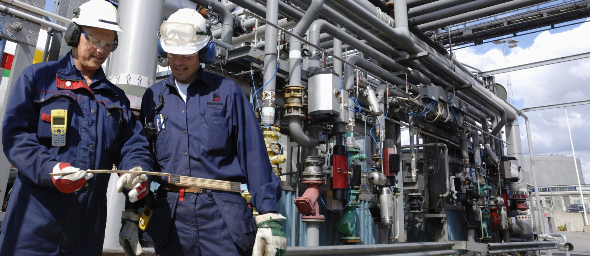 Process Engineers in a Process Plant
Process control is a field of engineering that involves the regulation of process variables, while instrumentation is a field of engineering that plays a vital role in ensuring efficient operation of any processing or production plant. It involves the use of a complete set of instruments to measure, indicate, transmit, record and control a process variables. When instruments are properly used, every process equipment operates correctly.
Process variables can be defined as certain physical or chemical conditions in a process that we can measure and change, and needs to be controlled in other to achieve desired process results.
An Instrument is any device used for measuring, indicating, controlling, recording and adjusting a physical or chemical property in a process. They are the eyes and ears of a process plant.
Instruments used in process plants are usually driven and powered by:
- Air (pneumatic)
- Liquid (hydraulic)
- Electrical power
Devices which change one form of energy to another particularly electrical current to pneumatic (I to P converter) in industrial processes are called Transducers.
A process can be defined as the changing of raw materials into finished products. And it is very important that the process conditions are accurately controlled at all times. These control is achieved with instruments.
A control loop is an active system that keeps a process variable within maximum and minimum values by continuous measurement and corrective actions.
The four major process variables usually being controlled in process plants and systems are:
- Flow
- Level
- Pressure
- Temperture
The major components of a process control systems are:
- Sensors: devices that senses signals from the process. It usually converts a physical condition to an electrical signal.
- Transmitters: devices that standardizes the signals coming from the sensors and gives a standard output usually 4 -20 mA, 0-10V, 3-15 Psi.
- Controllers: these devices make decisions based on the signals received from the transmitters.
- Final Control Element (Actuators): devices that covert electrical signals from the controllers into physical conditions. These devices act on the process and causes the control.
Process signals can either be analog (continuous) signals or digitals (discrete or on/off) signals. The standard analog signals for instrumentation are: 4-20mA, 0-10V, 3-15Psi. Some of these analog signals don’t start at zero, because controllers often need to know the difference between low signal (minimum value) and no signal (no input at all). These non-zero low signals are referred to as “Live Zeroes”.
Current loop technologies have been used for analog sensors for decades, to transmit important process data to the control system. In process control, the lowest measurable process value is called the lower range limit (LRL) which represents the 0% reading while the highest measurable process value is called the upper range limit (URL) which represents 100% reading.
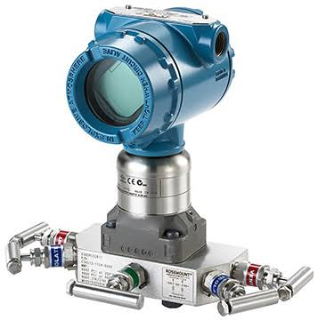 A Pressure Transmitter
Pressure (P) is defined as force (F) applied per given area (A).
P = F/A (Pa)
Pressure generally can be of three types:
Gauge pressure: this is the pressure above that of the surrounding atmosphere. It is the pressure due to an object on a surface.
Absolute Pressure: this is the pressure due to both atmospheric and gauge pressure.
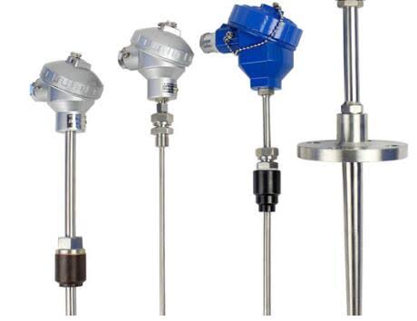 Temperature Transmitters `
Temperature can be defined as the degree of hotness or coldness of a place or object. Temperature transmitters are devices that converts thermal energy to electrical energy. The two (2) major temperature transmitters used in the process industries are:
- Thermocouple: A device that measures temperature using a principle called the “See-beck Effect”. Where two dissimilar metals are joined together to form a hot junction. When this junction is heated, a small EMF is produced that causes current to flow. To avoid voltage drops, thermocouples use special cables to transmit their signals.
- RTD (Resistance Temperature Detectors): A device that indicates temperature by measuring the change in electrical resistance of metals as a result of change in temperature. Generally as temperature applied to a metal goes high, the resistance of the metal increases likewise. This change in resistance indicates temperature change.
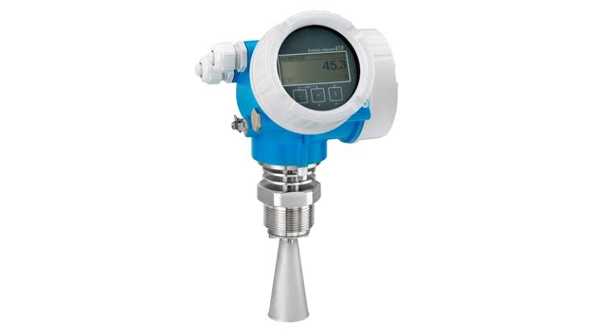 A Radar Level Transmitter
the level measurement for process control are either point measurements - indicating only full or empty states, or continuous measurements – indicating a full range level of a process.
Some level measuring transmitters include:
- Ultrasonic transmitters Level
- Radar transmitters
- Differential pressure transmitters temperture
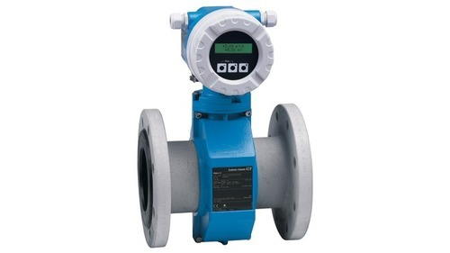 A Flow Transmitter
Flow is one of the most important process variable and it is defined as the movement of fluids (liquid or gas) from one point to another. In process systems, it is important to know the rate of flow through different process equipment.
There are 2 (two) types of flow:
- Laminar Flow: this is the flow that occurs when the fluid flow rate is low.
- Turbulent Flow: this describes a flow that occurs when flow rate is high.
Majorly, flow measurement in process control is usually achieved through the differential pressure principle .
With the differential pressure princple, a restriction is placed along the flow path of the fluid causing a change in pressure at that point. Pressure downstream of the restriction is usually lower that the pressure upstream of the restriction and the difference between the two pressures is called the differential pressure. These change in pressure, can be used to calculate the flow rate which is usually done by the transmitters.
Benefits of Industrial Automation and Automated Process Control
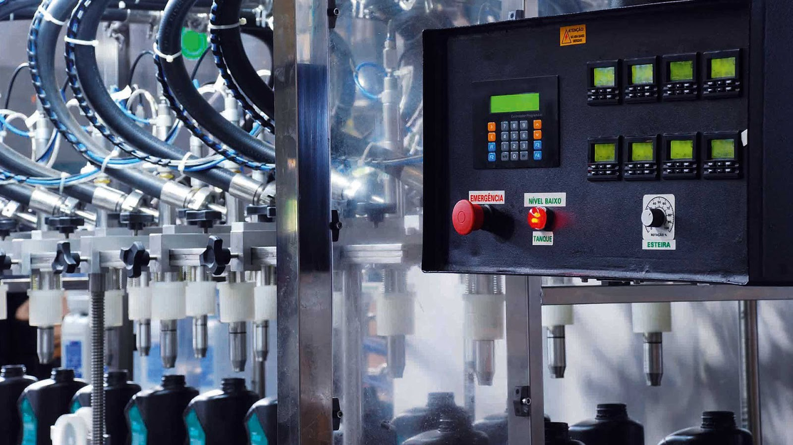 A Control Unit
The benefits of industrial automation includes:
- Saves time
- Increases productivity
- Improves reliability and safety
- Reduces or eliminates the possibility of human error
- Helps to achieve higher performance and production rate
- Reduces cost through energy savings, material consumption, and labour costs
The Industrial Automation Architectural Hierarchy
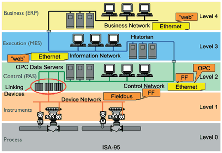 The Industrial Automation Hierachy
Industrial Automation and process control can be segmented into various hierarchy or levels. With each level having its own designated function.
These levels are:I. Level 1 (Field level) – This includes devices such as: sensors, transmitters and actuators (valves, motors and relays). The main task of field level devices is to transfer data from processes through sensors and transmitters, to higher level systems.
II. Level 2 (Control level) – This includes the various industrial controllers such as: PLCs, robots and CNC machines. These systems acquire the process parameters from various sensors and then drives the actuators or final control elements based on process signals.
III. Level 3 (Supervision and Production control level) – This Includes: SCADA systems, DCS, MES (Manufacturing Execution Systems). In this level, monitoring systems facilitate the controlling and intervening functions such as:
- Setting production targets
- Supervising various parameters Increases productivity
- Historical archiving
IV. Level 4 (Enterprise and Information Management level) – This includes: ERP (Enterprise resource planning), PLM (Product life-cycle management), SCM (supply chain management) systems. They are often referred to as top-Floor level systems and they manage the whole automation system and process.